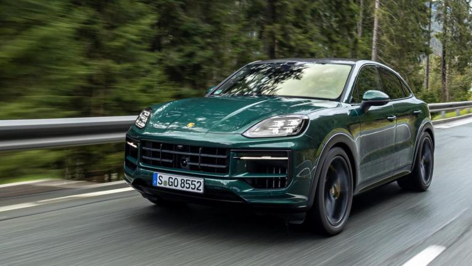
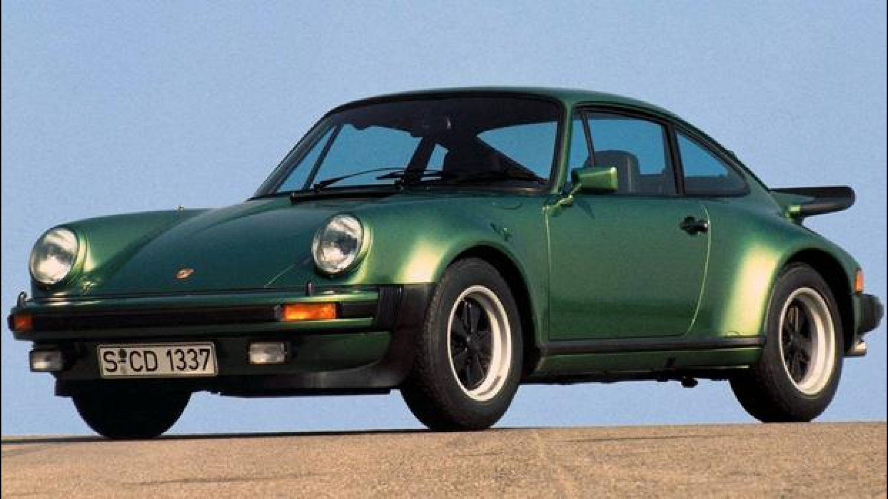

Modelli Iconici Porsche
| AUTO PIÙ VENDUTA | AUTO STORICA | AUTO CON PIÙ PRESTAZIONI |
|---|---|---|
|
 Porsche CayenneSUV sportivo di lusso che unisce versatilità e prestazioni elevate. |
 Porsche 911L’iconica sportiva nata nel 1963, simbolo di design e ingegneria senza tempo. |

Porsche TaycanLa prima elettrica Porsche ad alte prestazioni, innovativa e sostenibile. |